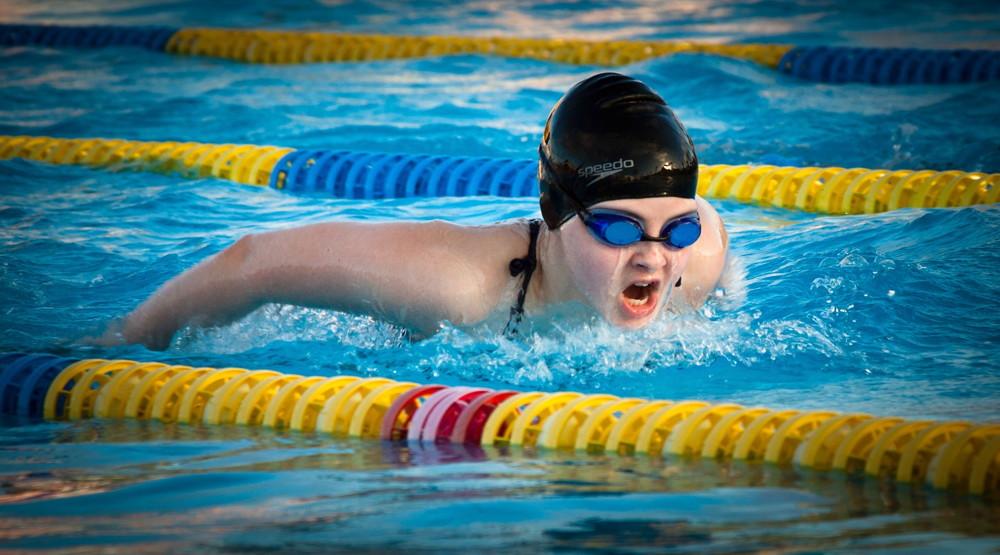

El Instituto de Cultura Física y Deporte de Nuevo León y
La Asociación Regiomontana de Triatlón, A.C.
Proceso de Clasificación a la Olimpiada Nacional 2017
Convocatoria
Evento de “MARCAS MÍNIMAS” para conformar la Selección Estatal de Triatlón
Rumbo a la Olimpiada Nacional 2017
-
Se llevará a cabo la toma de tiempos de 400m natación y 1000m carrera pedestre, a todos los atletas que quieran participar para integrar la Selección Estatal de Triatlón de N.L. con miras a participar en la ON2017.
-
Se entregará con esta convocatoria el Anexo Técnico de Triatlón, que contiene los criterios para conformar la Selección Estatal de Triatlón 2017.
Natación 400mts.
-
Fecha: 07 de abril 2017.
-
Sede: Fosa de clavados del “CARE”
-
Afloje: 6:30 horas.
-
Hora de inicio: 7:00 horas
Carrera 1000mts.
-
Fecha: 07 de abril 2017.
-
Sede: Fosa de clavados del “CARE”
-
Afloje: 16:30 horas.
-
Hora de inicio: 17:00 horas
3.-Categorías y Ramas.
| Categorías |
Ramas |
| Infantil Mayor 14-15 años (2002-2003) |
Femenil y varonil |
| Infantil Juvenil Menor 16-17 años (2002-2003) |
Será requisito indispensable presentar la siguiente documentación:
- 4 fotografías a color
- Original y copia fotostática del acta de nacimiento.
- Copia fotostática de la Cédula Única de Registro de Población (CURP).
- Copia fotostática de la credencial de estudiante vigente (en caso de no tenerla, presentar constancia de estudios o identificación oficial).
- Certificado médico con antigüedad máxima de 10 días.
- Carta responsiva (para los menores de edad que firmará el padre o tutor).
- Copia fotostática de una identificación oficial de la persona que firme la carta responsiva.
- Copia o documento de pago y numero de Afiliación por la federación mexicana vigente (2017)
- Las fechas de entrega de documentos serán el día 05 DE ABRIL 2017 de 15:00 a 20:00hrs. En las instalaciones del CARE oficinas del metodólogo Lic. Jorge Rodríguez.
- Quien no cumpla con la entrega completa de documentos no podrá ser considerado para participar en el evento.
- De acuerdo al Anexo Técnico de CONADE y aprobado por la FEDERACION MEXICANA DE TRIATLON A.C.
- DIA: Jueves 06 de abril de 2017 a las 19:00 horas
- LUGAR: Sala Snack de la Villa Deportiva del Parque Niños Héroes.
- ACTIVIDADES:
- Firmar el formato de exoneración de participación que lo envía ONJ 2017.
- Se hará entrega de los números para carrera pedestre, gorra de natación (obligatorio uso el día de la prueba) y número para bicicleta.

- El vigente de la FMTRI A.C
- Por escrito de acuerdo a los lineamientos del Reglamento de la Federación Mexicana de Triatlón A.C. y al Reglamento General de Participación.
- Los entrenadores nacionales y extranjeros que participen en la Etapa Nacional, deberán presentar constancia de acreditación aprobada del EVETRI (Escuela Virtual de Entrenadores de Triatlón), módulo 2
- Por consiguiente deben de haber acreditado y aprobado, de manera completa el Modulo 1 y 2 del EVETRI.
- En ambos casos, deberán estar incluidos en la cédula de inscripción correspondiente.
- Serán designados por la Federación Mexicana de Triatlón A.C. y Asociación Regiomontana de Triatlón A.C.
- Se contará con Servicio Médico por parte del INDE.
- El Comité Organizador, la Asociación Regiomontana de Triatlón A.C. Federación Mexicana de Triatlón A.C. y el INDE se deslindan de cualquier responsabilidad en caso de accidente o pérdida de cualquier objeto de valor que ocurra dentro de las instalaciones, ya que el Triatlón y sus disciplinas se consideran Deportes con Riesgo Deportivo.
- Todo lo no previsto en la presente convocatoria será revisado por la Comisión Técnica Designada.
Atentamente:
Dra. Lourdes Mata QuezadaPresidenta de la Asociación Regiomontana de Triatlón A.C.
MC. Vladimir Ortiz GómezDirector de Calidad en el Deporte / INDE